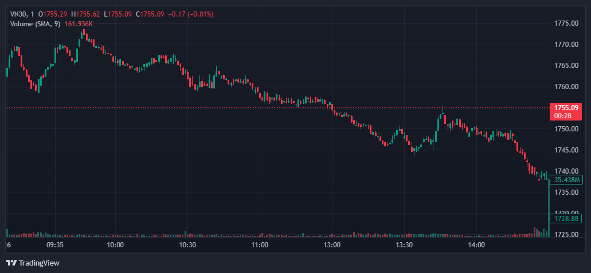

Nhận định chỉ số VN30 ngày 27/11/2026: Thị trường còn bi quan
Nhận định chỉ số VN30 ngày 27/11/2026: Chỉ số thủng vùng hỗ trợ cũ, thanh khoản tăng cao và áp lực bán tiếp tục chi phối xu hướng ngắn hạn.
Đọc tiếp →Theo dõi diễn biến thị trường hợp đồng tương lai VN30, đọc nhận định để tham khảo góc nhìn và ôn lại kiến thức nền tảng. Mỗi chuyên mục hiển thị 6 bài mới nhất và tự động cập nhật khi có bài mới.
Góc nhìn về diễn biến chỉ số VN30 và hợp đồng tương lai. Chỉ để tham khảo.

Nhận định chỉ số VN30 ngày 27/11/2026: Chỉ số thủng vùng hỗ trợ cũ, thanh khoản tăng cao và áp lực bán tiếp tục chi phối xu hướng ngắn hạn.
Đọc tiếp →Các thông tin, quy định và sự kiện đáng chú ý với nhà đầu tư phái sinh.
Chưa có bài viết nào trong chuyên mục này. Bài mới sẽ xuất hiện ở đây.
Kiến thức nền tảng và thực hành giao dịch hợp đồng tương lai VN30.
Tìm hiểu chứng khoán phái sinh là gì, các sản phẩm tại Việt Nam, hợp đồng tương lai VN30, cách vận hành và những rủi ro người mới cần biết.
Đọc tiếp →Hợp đồng tương lai VN30 là gì? Giải thích khái niệm, cách vận hành, ký quỹ, lãi lỗ và khác biệt so với cổ phiếu cho nhà đầu tư mới tìm hiểu phái sinh.
Đọc tiếp →Thông tin chỉ có giá trị khi bạn biết dùng nó vào đúng chỗ.
Mỗi nhận định là một góc nhìn tại một thời điểm và có thể sai. Hãy dùng nó để tham khảo, rồi tự đối chiếu với kế hoạch giao dịch và mức rủi ro của riêng bạn.
Hãy bắt đầu từ các bài về hợp đồng tương lai, ký quỹ, đòn bẩy và cách tính lãi lỗ trước khi theo dõi tin tức thị trường.
Đọc kiến thức giao dịchLưu ý rủi ro: phái sinh có đòn bẩy cao, bạn có thể mất toàn bộ vốn ký quỹ. Nội dung trên website chỉ nhằm mục đích giáo dục, không phải khuyến nghị đầu tư.
Hiểu kỹ sản phẩm, chọn đối tác uy tín và bắt đầu bằng khoản vốn bạn có thể chấp nhận rủi ro.
Mở tài khoản phái sinh VN30